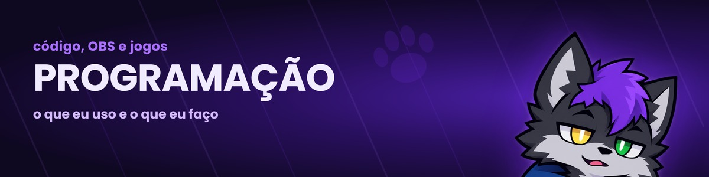

Programação
front-end, principalmente
Estou na graduação de Desenvolvimento de Software Multiplataforma e mexo mais com site e interface. Uso HTML, CSS, JavaScript, TypeScript, React, Next.js e Tailwind, e Git pra tudo.
Projetos
Fiz o TeuzinBetterChat e o OverlayKit, ferramentas gratuitas pra quem faz live. Dá uma olhada na página de projetos.
Repositórios recentes
carregando…
Joguinhos
No arquivo tem uns jogos que fiz. O Pac-Man está completo, com fantasmas, fases e recorde.